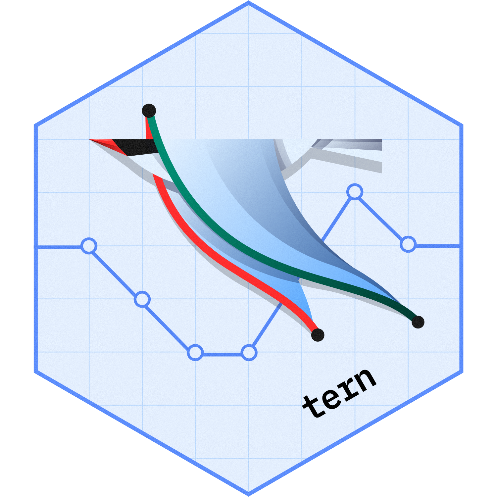

Unconditional Exact Confidence Interval for Difference in Proportions
2026-05-15
Source:vignettes/uncond_exact_prop_diff_ci.Rmd
uncond_exact_prop_diff_ci.RmdThis vignette explains the construction of the unconditional exact
confidence interval for the difference in proportions using the
estimate_proportion_diff() function with
method = "uncond_exact_diff" from the tern
package. This method is particularly useful when dealing with small
sample sizes or when the assumptions of other methods (like the normal
approximation) are not met. In SAS this method is implemented in the
FREQ procedure with the
RISKDIFF(METHOD = NOSCORE) option in the EXACT
statement.
Definition
The definition of the exact unconditional confidence limits is as follows. Without loss of generality, we define as the risk (proportion) to be in column 1 for row 1, and as the risk (proportion) to be in column 1 for row 2. The risk difference is defined as the difference between the row 1 and row 2 risks (proportions), , and and denote the row totals of the table. The probability function for a given table
can then be expressed in terms of the table cell frequencies, the risk difference, and the nuisance parameter as:
The exact unconditional approach fixes the row margins and of the table and eliminates the nuisance parameter by using the maximum p-value (worst-case scenario) over all possible values of (Santner and Snell 1980). It then computes the confidence limits by inverting two separate one-sided exact tests that are based on the unstandardized risk difference . Santner and Snell (1980) refer to this method as the “Tail Method” for confidence intervals.
For a given confidence level, the confidence limits for the risk difference are computed as (note that this is not correct in the SAS documentation here):
where
and
The set includes all tables in which the row sums are and , as these are assumed fixed as explained above. denotes the value of the test statistic, here the unstandardized risk difference, for table in , which depends on the counts and in the first column of the table, and is defined as:
is the value of the test statistic for the observed table.
To compute , the sum includes probabilities of those tables for which . For a fixed value of , is defined as the maximum sum over all possible values of .
Similarly, to compute , the sum includes probabilities of those tables for which . For a fixed value of , is defined as the maximum sum over all possible values of .
Finally, the confidence limits are defined as the infimum of values for which is greater than for the lower limit, and the supremum of values for which is greater than for the upper limit.
Implementation
The prop_diff_uncond_exact() function in the
tern package implements the above definition of the
unconditional exact confidence interval for the difference in
proportions.
Examples
We will use this little example helper to create the data sets below in the format as needed.
mk_data <- function(n11, n21, n1, n2) {
rsp <- c(rep(TRUE, n21), rep(FALSE, n2 - n21), rep(TRUE, n11), rep(FALSE, n1 - n11))
grp <- factor(c(rep("B", n2), rep("A", n1)), levels = c("B", "A"))
list(rsp = rsp, grp = grp)
}Example 1
n11_obs <- 40
n21_obs <- 5
n1 <- 78
n2 <- 17
dta <- mk_data(n11 = n11_obs, n21 = n21_obs, n1 = n1, n2 = n2)
example1 <- tern::prop_diff_uncond_exact(rsp = dta$rsp, grp = dta$grp, conf_level = 0.95)
#> Registered S3 method overwritten by 'tern':
#> method from
#> tidy.glm broom
example1$diff
#> [1] 0.2187029
example1$diff_ci
#> [1] -0.04659335 0.46760887
# Expected from SAS (only 4 digits are available):
expected_estimate1 <- 0.2187
expected_conf_int1 <- c(lower = -0.0466, upper = 0.4676)
# Compare:
all.equal(example1$diff, expected_estimate1, tol = 1e-4)
#> [1] TRUE
all.equal(example1$diff_ci, expected_conf_int1, tol = 1e-4)
#> [1] "names for current but not for target"Example 2
n11_obs <- 27
n21_obs <- 3
n1 <- 57
n2 <- 3
dta <- mk_data(n11 = n11_obs, n21 = n21_obs, n1 = n1, n2 = n2)
example2 <- tern::prop_diff_uncond_exact(rsp = dta$rsp, grp = dta$grp, conf_level = 0.95)
example2$diff
#> [1] -0.5263158
example2$diff_ci
#> [1] -0.9056315 0.1196765
# Expected from SAS (only 4 digits are available):
expected_estimate2 <- -0.5263
expected_conf_int2 <- c(lower = -0.9057, upper = 0.1197)
# Compare:
all.equal(example2$diff, expected_estimate2, tol = 1e-4)
#> [1] TRUE
all.equal(example2$diff_ci, expected_conf_int2, tol = 1e-4)
#> [1] "names for current but not for target"Example 3
n11_obs <- 27
n21_obs <- 3
n1 <- 57
n2 <- 3
dta <- mk_data(n11 = n11_obs, n21 = n21_obs, n1 = n1, n2 = n2)
example3 <- tern::prop_diff_uncond_exact(rsp = dta$rsp, grp = dta$grp, conf_level = 0.99)
example3$diff
#> [1] -0.5263158
example3$diff_ci
#> [1] -0.9585202 0.2677000
# Expected from SAS (only 4 digits are available):
expected_estimate3 <- -0.5263
expected_conf_int3 <- c(lower = -0.9586, upper = 0.2677)
# Compare:
all.equal(example3$diff, expected_estimate3, tol = 1e-4)
#> [1] TRUE
all.equal(example3$diff_ci, expected_conf_int3, tol = 1e-4)
#> [1] "names for current but not for target"Example 4
This very small sample size use case is directly from the Santner and Snell (1980) paper (section 4, Tail Method Intervals and Comparisons).
n11_obs <- 0
n21_obs <- 2
n1 <- 2
n2 <- 2
dta <- mk_data(n11 = n11_obs, n21 = n21_obs, n1 = n1, n2 = n2)
example4 <- tern::prop_diff_uncond_exact(rsp = dta$rsp, grp = dta$grp, conf_level = 0.90)
example4$diff
#> [1] -1
example4$diff_ci
#> [1] -1.00000000 0.05425839
# Expected from paper (only 4 digits are available):
expected_estimate4 <- -1
expected_conf_int4 <- c(lower = -1, upper = 0.0543)
# Compare:
all.equal(example4$diff, expected_estimate4, tol = 1e-4)
#> [1] TRUE
all.equal(example4$diff_ci, expected_conf_int4, tol = 1e-4)
#> [1] "names for current but not for target"
#> [2] "Mean relative difference: 0.0007668652"So also this matches the expected results from the paper.